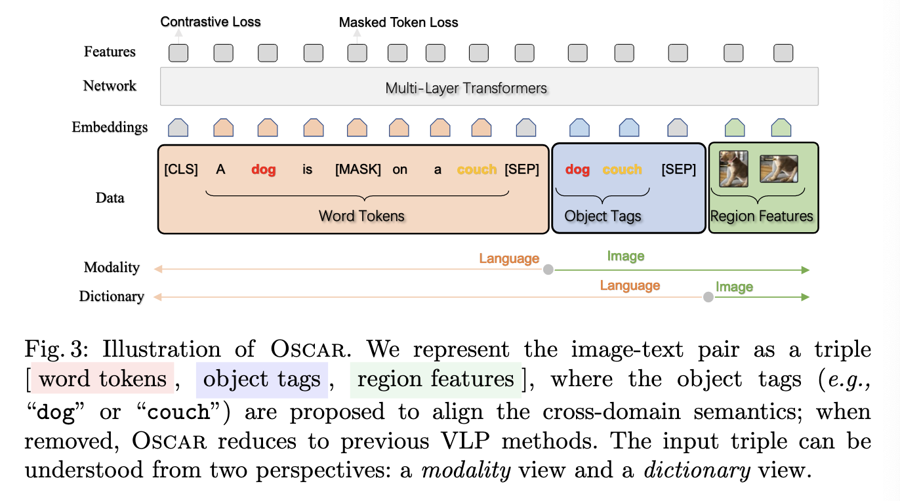
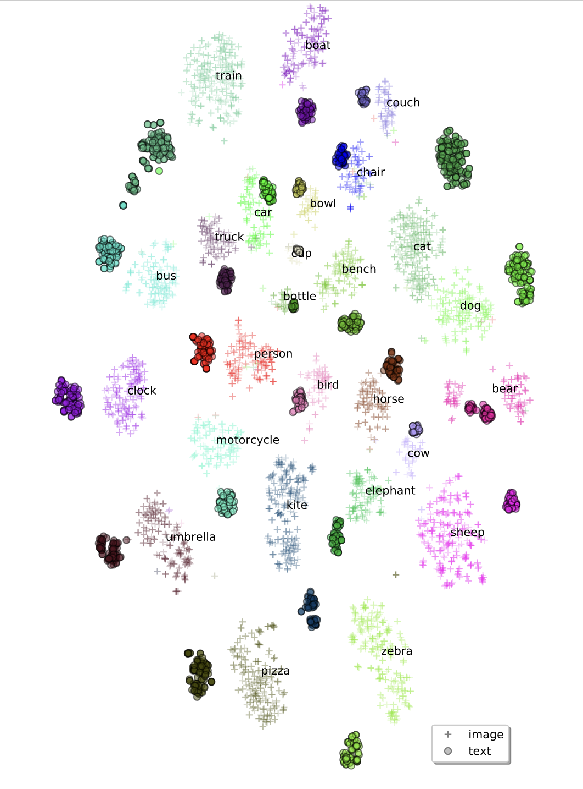

[TOC]
- Title: Oscar: Object Semantic Aligned Pro Training for Vision Language Tasks
- Author: Xiujun Li et. al.
- Publish Year: 26 Jul 2020
- Review Date: Sat, Sep 3, 2022
Summary of paper
Motivation
-
Existing method simply concatenates image region features (patch features) and text features as input to the model to be pre-trained and use self-attention to learn image-text semantic alignments in a brute force manner.
-
the lack of explicit alignment information between the image regions and the text poses alignment modelling a weakly-supervised learning task.
-
Moreover, visual regions are often over-sampled, noisy and ambiguous, which makes the task even more challenging.
-
in this paper, they proposed a method that uses object tag detected in images as anchor points to significantly ease the learning of alignments.
Motivation
- the salient objects in an image can be accurately detected and are often mentioned in the text.
Some key terms
how self-attention transformer learn cross-modal contextualised representation
- it takes visual region features $v = {v_1, …, v_k}$ and word embedding $w = {w_1, …, w_T}$ of its paired text as input, and relies on the self-attention mechanism to learn image-text alignments to produce cross-modal contextual representation.
What things VLP method suffers
- ambiguity,
- the visual region features are usually extracted from over-sampled regions, which inevitably results in overlaps among image regions at different positions. This renders ambiguities for the extracted visual embeddings.
- i.e., overlap of objects in the image
- lack of grounding.
- there is no explicit label alignments between regions or objects in an image and words or phrases in text.
- therefore we may want to summarised the image further so that we can match with the abstract words.
OSCAR architecture

- word and tag are all in BERT text embeddings
- images is the set of region vectors of the image.
Preprocess Region feature
- Given an image with K regions of objects (normally over-sampled and noisy), Faster R-CNN is used to extract the visual semantics of each region as (v’, z), where v’ is the region feature and z is the region position. They concatenate $v’$ and $z$ to form a position-sensitive region feature vector, which is further transformed into $v$ using a linear projection to ensure that it has the same vector dimension as that of word embeddings.
Pre-training objective
-
15% Maksed Token Loss
-
Contrastive loss
- apply a fully-connected (FC) layer on the top of the special token [CLS] as a binary classifier f(.) to predict whether the pair contains the original image representation or any polluted ones.
-
$\mathcal{L}{\text{Pre-training}} = \mathcal{L}{\text{MTL}} + \mathcal{L}_C$
Results
feature visualisation

- We observe small distances between text and image features of the same objects; some of them are perfectly aligned, as demonstrated by the overlapping regions.
Good things about the paper (one paragraph)
The code and pre-trained models are released: https://github.com/microsoft/ Oscar